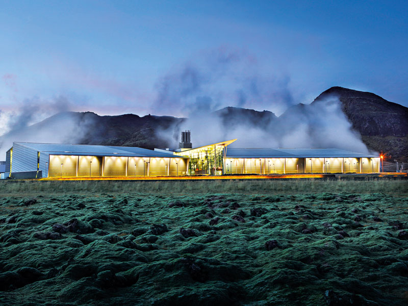

Geothermal energy is heat that is generated within the Earth. (Geo means “earth,” and thermal means “heat” in Greek.) It is a renewable resource that can be harvested for human use.
About 2,900 kilometers (1,800 miles) below the Earth’s crust, or surface, is the hottest part of our planet: the core. A small portion of the core’s heat comes from the friction and gravitational pull formed when Earth was created more than 4 billion years ago. However, the vast majority of Earth’s heat is constantly generated by the decay of radioactive isotopes, such as potassium-40 and thorium-232.
Isotopes are forms of an element that have a different number of neutrons than regular versions of the element’s atom.
Potassium, for instance, has 20 neutrons in its nucleus. Potassium-40, however, has 21 neutrons. As potassium-40 decays, its nucleus changes, emitting enormous amounts of energy (radiation). Potassium-40 most often decays to isotopes of calcium (calcium-40) and argon (argon-40).
Radioactive decay is a continual process in the core. Temperatures there rise to more than 5,000° Celsius (about 9,000° Fahrenheit). Heat from the core is constantly radiating outward and warming rocks, water, gas, and other geological material.
Earth’s temperature rises with depth from the surface to the core. This gradual change in temperature is known as the geothermal gradient. In most parts of the world, the geothermal gradient is about 25° C per 1 kilometer of depth (1° F per 77 feet of depth).
If underground rock formations are heated to about 700-1,300° C (1,300-2,400° F), they can become magma. Magma is molten (partly melted) rock permeated by gas and gas bubbles. Magma exists in the mantle and lower crust, and sometimes bubbles to the surface as lava.
Magma heats nearby rocks and underground aquifers. Hot water can be released through geysers, hot springs, steam vents, underwater hydrothermal vents, and mud pots.
These are all sources of geothermal energy. Their heat can be captured and used directly for heat, or their steam can be used to generate electricity. Geothermal energy can be used to heat structures such as buildings, parking lots, and sidewalks.
Most of the Earth’s geothermal energy does not bubble out as magma, water, or steam. It remains in the mantle, emanating outward at a slow pace and collecting as pockets of high heat. This dry geothermal heat can be accessed by drilling, and enhanced with injected water to create steam.
Many countries have developed methods of tapping into geothermal energy. Different types of geothermal energy are available in different parts of the world. In Iceland, abundant sources of hot, easily accessible underground water make it possible for most people to rely on geothermal sources as a safe, dependable, and inexpensive source of energy. Other countries, such as the U.S., must drill for geothermal energy at greater cost.
Geothermal energy is a renewable resource. The Earth has been emitting heat for about 4.5 billion years, and will continue to emit heat for billions of years into the future because of the ongoing radioactive decay in the Earth’s core.
However, most wells that extract the heat will eventually cool, especially if heat is extracted more quickly than it is given time to replenish. Larderello, Italy, site of the world’s first electrical plant supplied by geothermal energy, has seen its steam pressure fall by more than 25% since the 1950s.
Re-injecting water can sometimes help a cooling geothermal site last longer. However, this process can cause “micro-earthquakes.” Although most of these are too small to be felt by people or register on a scale of magnitude, sometimes the ground can quake at more threatening levels and cause the geothermal project to shut down, as it did in Basel, Switzerland.
Geothermal systems do not require enormous amounts of freshwater. In binary systems, water is only used as a heating agent, and is not exposed or evaporated. It can be recycled, used for other purposes, or released into the atmosphere as non-toxic steam. However, if the geothermal fluid is not contained and recycled in a pipe, it can absorb harmful substances such as arsenic, boron, and fluoride. These toxic substances can be carried to the surface and released when the water evaporates. In addition, if the fluid leaks to other underground water systems, it can contaminate clean sources of drinking water and aquatic habitats.
were made possible by investments from American industry and government agencies. Today, the plants are Philippine-owned and operated. Geothermal Energy and People
Geothermal energy exists in different forms all over the Earth (by steam vents, lava, geysers, or simply dry heat), and there are different possibilities for extracting and using this heat.
In New Zealand, natural geysers and steam vents heat swimming pools, homes, greenhouses, and prawn farms. New Zealanders also use dry geothermal heat to dry timber and feedstock.
Other countries, such as Iceland, have taken advantage of molten rock and magma resources from volcanic activity to provide heat for homes and buildings. In Iceland, almost 90% of the country’s people use geothermal heating resources. Iceland also relies on its natural geysers to melt snow, warm fisheries, and heat greenhouses.
The United States generates the most amount of geothermal energy of any other country. Every year, the U.S. generates at least 15 billion kilowatt-hours, or the equivalent of burning about 25 million barrels of oil. Industrial geothermal technologies have been concentrated in the western U.S. In 2012, Nevada had 59 geothermal projects either operational or in development, followed by California with 31 projects, and Oregon with 16 projects.
The cost of geothermal energy technology has gone down in the last decade, and is becoming more economically possible for individuals and companies.